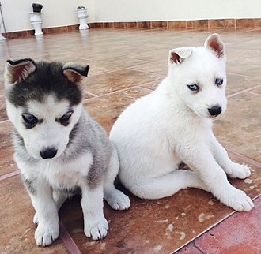
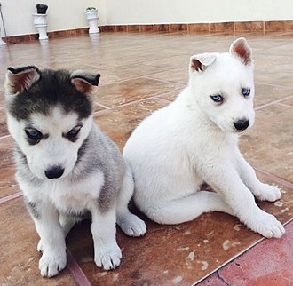

Somos Mundo Husky!
Situados en Buenos Aires, la Capital Federal de la República Argentina, en Sudamérica, criamos Siberian Huskies desde 1989. Miembro activo del Club Argentino del Siberian Husky desde 1988, Juez Especialista de la Raza y como tal, invitado a juzgar la primera Especializada de la Raza en Cuba.Actualmente Vicepresidente del Club Argentino del Siberian Husky. Nuestros ejemplares , con el sufijo "Mundo Husky" han obtenido mas de 60 titulos en lo que va de nuestra crianza, tanto en Argentina, como en Brasil, Uruguay y Cuba, entre otros. Como menciones especiales, somos el único criadero en obtener 3 veces el titulo de " Mejor Pareja" y "Mejor Progenie" en los últimos años en el país. Además, tenemos el orgullo de ser el mejor criadero de la Argentina los años 2001,2004,2005,2006 y 2007,2008.Ganadores de la Nacional la Raza, organizada por el Club Argentino del Siberian Husky en el Año 2009, con la Ch Arg Kumbia del Mundo Husky.
.jpeg)
El Husky Siberiano conserva muchas características y comportamientos de su ancestro el lobo. Aparte de su gran parecido físico conserva cualidades como el aullido. Este tipo de animales chacales suelen aullar y no ladrar como lo hace cualquier otro perro.
Aun así, siempre nos preguntamos si es agresivo y hay que saber que es todo lo contrario. Los huskies son amistosos, cariñosos y dóciles. Está lleno de vitalidad y energía con un gran instinto de cazador.
Estos caninos son muy listos. Ocupan el puesto número 45 en la clasificación de Stanley Coren acerca de la inteligencia de los perros.
No les gusta vivir solos y requieren de compañía. La soledad les deprime y necesitan estar rodeado de un grupo ya sean de personas o animales (manada). Tampoco les gusta que no se les haga caso. Si los dejamos en casa solos mucho tiempo nos hará algún desastre que otro.
El correr y el querer explorar todo lo que les rodea es la clave para que les guste escaparse. Como perros nórdicos les apasiona correr y, además, están acostumbrados a recorrer grandes distancias. Por eso se recomienda colocarle un chip para tenerlo localizado. Si se nos escapa nos costará mucho encontrarlo y traerlo de nuevo a casa.
No es la mascota ideal para llevarlo suelta por la calle o por el parque. Tampoco es buena idea tenerlo en un jardín sin valla. Habrá que llevarlo siempre con correa y tener un buen terreno vallado.
Nuestros huskys en competencia y nuestros peludos de meses de vida
 
